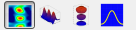

After opening the program, you will find
the next elements:
JetProcessing is conceived to work using
the NVIDIA CUDA tool for a parallel and faster image processing.
This window will only be shown in case the
program detects that CUDA is available, and will let the user choose between
the CUDA or the CPU mode.
Figure 14. Mode selection
screen
Choose the first option to use CUDA tool
(recommended) or the second option to perform the calculations always with the
CPU.
If the user checks the checkbox “Remember
this selection”, the selected mode will be used by default in the next
executions. To get back the dialog, look up the section 3.11.
Press on “Continue” or double click the
chosen option.
While opening the program for the first
time, the default values will be set, and the program will ask for an output
directory. For more information about this consult 3.7.1, 3.7.3 and 3.7.5.
For the kind of interference images that
can be processed using JetProcessing, it’s always necessary setting up a
reference image taken when the target is out of the system, and also some pre-processing
parameters.
This process is very important in order to
get good results.
To set up a reference, go to Reference à Change
Reference, press Ctrl+R, or click on the icon in the tool
box.
The first step is selecting the reference
image:
Figure 15. Reference image selection screen
The available elements are:
§
Get Image From File: Let the user pick up a file
with the image.
§
Get Image From Camera: Take an image from the
camera as reference.
§
Camera Settings: Will show the camera
configuration dialog. Look up 3.8.1.
§
Width (mm) and Height (mm): Textbox for the user
to introduce the real size in millimeters of the picture. This information will
help to set the axes range values properly.
§
Save Picture to File: Let the user save the
current image to a file.
Press “Next” to continue.
The second step lets the user make some
operations with the image.
Figure 16. Setting size screen
The available elements are the following:
§
Horizontal Mirror: Performs a horizontal flip.
§
Vertical Mirror: Performs a vertical flip.
§
No Rotation, Rotate 90º, Rotate 180º and Rotate
270º: Rotates the image clockwise.
§
Width (pixels) and Height (pixels): Set an adequate
power-of-two dimensions for the image, necessary to perform the FFT algorithm.
The result of applying the operations will
be shown in a preview on the right.
Press “Next” to continue.
Now, the user should select the image area
where the interference pattern is, and also the origin of coordinates.
The available elements are the following:
§
Save Values to File: Let the user save the
parameters to a “.msk1” file.
§
Load Values from File: Let the user load the
parameters from a “.msk1” file.
§
Origin Coordinates (x, y): Origin of coordinates
position. To change it, modify the spinbox values, or press double-click on the
left image.
§
Mask Coordinates (X min, X max, Y min, Y max):
For the area with the interference pattern. To change it modify the spinbox
values, or press right-click and drag on the left image. A preview of the
select area is shown on the right image.
Figure 17. Setting the mask and origin of coordinates screen
For more convenience the left preview can
be zoomed in and out using the mouse wheel and shifted by clicking and
dragging.
Press “Next” to continue.
The user should select a mask for the
Fourier transform that will be used to filter the image in frequency.
The available elements are the following:
§
Save Values to File: Lets the user save the
parameters to a “.msk2” file.
§
Load Values from File: Lets the user load the
parameters from a “.msk2” file.
§
Mask Coordinates (X min, X max, Y min, Y max):
For the area with the interference pattern. To change it, modify the spinbox values
or press right-click and drag on the left image. A preview of the select area
is shown on the right image.
§
Preview Gain: Gain which is applied to the
Fourier transform image. Modify it to improve the quality of the image.
For more convenience the left preview can
be zoomed in and out using the mouse wheel and shifted by clicking and
dragging.
Figure 18. Setting the Fourier Mask screen
Press “Next” to continue.
At this point, when all the parameters have
been fixed, the program will show a phase image for the interest area of the
reference.
Note that the phase takes values from 0 and
2Pi. The actual reference image used to process the imaged will be just like
that, but with a continuous phase, taking values between -2Pi·n and 2Pi·m.
Figure 19. Result for the reference phase
Press “Finish” to end the process.
To obtain a first image for the gas-jet,
it’s necessary to pre-process the interference image with the reference phase
image.
The first steps are the same for both
pictures, the reference and the image with the gas-jet:
§
Modify it and change the size to a power-of-two
size.
§
Apply a mask to black out everything except for
the interest area.
§
Perform the Fourier transform.
§
Filter the phase frequencies with the second
mask.
§
Perform the inverse Fourier transform.
§
Get the phase for the interest area.
§
Make the phase continuous.
And finally:
§
Subtract to the phase image with the gas-jet,
the phase image for the reference.
Once this process is finished, the first
image for the gas-jet will be obtained and added to the image list, with a
preview.
To pre-process and add an image from the
camera, go to the menu Image à Process Image from Camera, press I+C, or click on the icon in the toolbox.
Obviously this will only be possible if
there is a compatible camera connected.
To pre-process and add one or more
interference files, go to the menu Image à Process Images from
File, press I+L, or click on the icon in the
toolbox.
When an image is pre-processed is also added
to the image list on the right.
That list shows the name and the preview
for every image.
Figure 20. Image list
The operations that can be performed regarding
this list are:
§
Change the name for an image: selecting the
target image by pressing on it, and pressing again; or pressing the F2 key.
§
Move up the selected image: go to the menu Image
à
Move Up, press I+UpArrow, or press the button “Move Up”.
§
Move down the selected image: go to the menu
Image à Move Down, press I+DownArrow, or press the button “Move Down”.
§
Delete the selected image: go to the menu Image à Delete,
press I+Del, or press the button “Delete”.
§
Delete every image: go to the menu Image à Delete All, press
Ctrl+Shift+Del. A confirmation dialog will be shown.
Once an image has been pre-processed, the
gas-jet image is available. However this image is no usually very clear, and
should be processed in order to remove the noise and other defects.
This process consists in applying to the
image different algorithms and operations.
The algorithms that can be used are the
following:
This operation inverts the image.
The result is the following:
Figure 21. Inversion algorithm, before and after
It can be applied to a phase image but
also, to a phase line.
This algorithm removes the horizontal tilt
using a least square method.
It obtains the optimal slope for every
horizontal line using:
Figure 22. Horizontal linear
regression slope formula
Then it calculates the mean value for the
slope and removes the tilt applying the next formula:
Figure 23. Removing
horizontal linear tilt formula
The result is the following:
Figure 24. Removing
horizontal tilt algorithm, before and after
It can be applied to a phase image but
also, to a phase line.
This algorithm removes the vertical tilt
using a least square method.
It obtains the optimal slope for every
vertical line using:
Figure 25. Vertical linear
regression slope formula
Then it calculates the mean value for the
slope and removes the tilt applying the next formula:
Figure 26. Removing vertical
linear tilt formula
The result is the following:
Figure 27. Removing vertical tilt algorithm, before and after
This algorithm removes negative noise by
setting the ground of the image.
It obtains a ground value, b, by averaging
the values of the left and right vertical lines, where there is supposed not to
be gas-jet.
Then it applies the next formula:
Figure 28. Set ground formula
The result is the following:
Figure 29. Set ground algorithm, before and after
It can be applied to a phase image but
also, to a phase line.
The only purpose of this operation is
adding a value to every point in the image. This could be useful to set some
adequate range for the image.
When adding this operation, a dialog box
will appear asking for the offset value:

Figure 30. Offset selection dialog
The result is the following:
Figure 31. Add
offset algorithm, before and after
It can be applied to a phase image but
also, to a phase line.
The only purpose of this operation is
multiplying every point in the image by a given value. This could be useful to
set some adequate range for the image.
When adding this operation, a dialog box
will appear asking for the factor value:
Figure 32. Factor selection dialog
The result is the following:

Figure 33. Multiply by algorithm, before and after
It can be applied to a phase image but
also, to a phase line.
This operation converts any image to a
horizontally symmetric image.
It takes place in two steps:
§
The algorithm searches each horizontal line to
find the maximum.
§
Then, for every horizontal line, it moves the
maximum to the center of the image, and average left and right side for each
point. Since the maximum was not originally centered, when in the averaging
process it’s necessary to go out of the image, the algorithm uses the nearest
border value instead.
The result is the following:

Figure 34. Make symmetric algorithm, before and after
It can be applied to a phase image but also,
to a phase line.
This operation evaluates the following
integral for every horizontal line.

Figure 35. Abel inversion
formula
Note that the integral has units, so the
result will have units too: m-1.
The Abel inversion supposes that the
original image is showing an accumulation of a variable through a structure
with cylindrical symmetry, like the accumulated phase of the rays of a laser
crossing through the gas-jet. That is why making the image symmetric before
applying Abel inversion is recommended.
Given that conditions, the Abel inversion
returns the value of the variable in a section that cuts lengthwise the
structure, in this case the gas-jet.
This operation can be used, for example, to
obtain the refraction index of the gas on every point, multiplying the result
of the Abel inversion by the wavelength used, dividing it by 2·Pi and adding 1.
When this algorithm is added to the list, a
dialog will appear, asking for the number of neighbours to evaluate de
derivative. This number should be increased in case the result shows too much
noise.
Figure 36. Neighbours number selection dialog
The result is the following:

Figure 37. Abel inversion algorithm, before and after
It can be applied to a phase image but
also, to a phase line.
This operation extracts a rectangle from a
zone with special interest for the user.
A dialog will appear:
Figure 38. Rectangle selection dialog
The user must select the interest area by
modifying the spinbox values, or pressing and dragging with the left mouse
button. The mouse wheel can be used to zoom in or out.
The result is the following:
Figure 39. Rectangle selection algorithm, before and after
This operation extracts a phase line from a
zone with special interest for the user.
A dialog will appear, letting the user to select
the beginning and the end of the line, by clicking and dragging with the left
mouse button, or modifying the spinbox values.
Once the line is fixed, the user can move
the beginning or the end by clicking and dragging on them; or the whole line by
clicking and dragging on the center of it.
The mouse wheel can be used to zoom in or
out.
There is a right preview too, showing the
section values for the currently selected line.

Figure 40. Line
selection dialog
Now that every available algorithm has been
explained it’s time to learn about how to add and apply some algorithms to an
image.
The algorithm list is on the left of the
window, and contains all the algorithms that will be applied sequentially to
the images.
It will be applied either the whole list,
or either until the current selected algorithm (Look up 3.11).
The algorithm list looks like:
Figure 41. Algorithm list
To add an algorithm to the list, the user
must first select in the combo box the kind of algorithm that he wants to add
and press on “Add Before” or “Add After” to add if before or after the selected
algorithm.
If certain algorithm has configurable
parameters, a dialog window will appear to set them up.
An algorithm list can be saved in an “.alg”
file.
To do it, go to the menu Algorithm à Save
Algorithm List to File, press A+S, or click on the icon  in the toolbox.
in the toolbox.
An algorithm list can be also loaded from
an “.alg” file.
To do it, go to the menu Algorithm à Load
Algorithm List from File, press A+L, or click on the icon in the toolbox.
Before loading the new algorithm list form
file, the previous list will be deleted.
Other operations that can be performed on
the algorithm list are:
§
Move the selected algorithm up: through the menu
Algorithm à Move Up, pressing A+UpArrow, or pressing the button “Move Up”.
§
Move the selected algorithm down: through the
menu Algorithm à Move Down, pressing A+DownArrow, or pressing the button “Move
Down”.
§
Edit the selected algorithm up: through the menu
Algorithm à Edit, pressing A+E, or pressing the button “Edit”.
§
Delete the selected algorithm up: through the
menu Algorithm à Delete, pressing A+Del, or pressing the button “Delete”.
The central area of the main window is the
results viewer that looks like:

Figure 42. Results viewer
It’s a textbox containing the label for the
dependent variable “Z”.
There are two different scaling modes:
§
Auto scaling for the Z axis (“Auto Scale Z Axis”
enabled): The maximum and minimum values for the dependent variable are set
depending on the maximum and minimum values for the current image.
§
Manual scaling (“Auto Scale Z Axis” disabled): The
user manually enters the maximum and minimum values for the dependent variable,
getting results as in the following example:
Figure 43. Manual scaling graphics
This option, when enabled, lets the user
watch a sequence movie with the selected graphic for the images currently in
the list.
The spinbox “FPS” lets the user decide the
frames per second rate of the movie.
The first kind of available graphic is the
spectrogram. This spectrogram shows the independent variables in the X and Y
axes, and use a colors code, with a legend on the right, for the dependent
variable:

Figure 44. Spectrogram graphic
There are many options to control this kind
of graphic:
§
Enable or disable the level curves. These curves
divide the scale in 10 equally distributed fragments.
§
Zoom-in by clicking and dragging with the left
mouse button.
Figure 45. Zooming in the spectrogram
§
Zoom-out step by step by clicking with the right
mouse button.
§
Shift the image by pressing and dragging with
the mouse wheel.
§
Return to the initial view by pressing Ctrl+RightClick.
When a line is selected, the graphic shows
the image just until the selection the line.
The second kind of graphic is a 3D surface.
It shows a 3D view of the surface, using the X and Y axes for the independent
variables and the Z axis for the dependent variable:

Figure 46. 3D surface graphic
There are many options to control this kind
of graphic:
§
Rotate the graphic by clicking and dragging.
§
Zoom the Graphics using the mouse wheel.
§
Shifting the graphic by clicking and dragging
while the Ctrl button is pressed.
§
Rotate the graphic in a different direction by
clicking and dragging while the Shift button is pressed.
When a line is selected, the graphic shows
the image just until the selection the line.
The third kind of existing graphic is the
parametrical surface. It shows an image of the gas-jet like a surface in a
three dimensional space too. The difference: now, both axes ,X and Y ,
represent the first independent variable, and the Z axis represents the second
independent variable. This graphic supposes that the image represents a
cylindrical symmetric object, and shows the surface where the dependent
variable reaches a certain value called “threshold”.
There are many options to control this kind
of graphic:
§
Change the threshold value in the correspondent
textbox.
§
Rotate the graphic by clicking and dragging.
§
Zoom the Graphics using the mouse wheel.
§
Shifting the graphic by clicking and dragging
while the Ctrl button is pressed.
§
Rotate the graphic in a different direction by
clicking and dragging while the Shift button is pressed.

Figure 47. Parametric surface graphic
When a line is selected, the graphic shows the image just until the
selection the line.
And the list kind of available graphic
represents phase lines, so it would only be enabled when a line is selected in
the algorithm list.
It represents the independent variable in
the horizontal axis, and the dependent variable along the vertical axis.
It also shows the values of the beginning
and end points when the line was extracted.
There are many options to control this kind
of graphic:
§
Zoom-in by clicking and dragging with the left
mouse button.
§
Zoom-out step by step by clicking with the right
mouse button.
§
Shift the image by pressing and dragging with
the mouse wheel.
§
Return to the initial view by pressing
Ctrl+RightClick.
Figure 48. Phase line graphic
Reaching good results is important, but
it’s also very important having a good way to export/save those results.
This application lets the user choose among
several options explained in the next chapters.
The user should find an output folder. This
folder will be used as a default directory for the exports.
To find the folder, go to the menu File à Select
Output Folder, press Ctrl+O, or click on the icon  in
the toolbox.
in
the toolbox.
This option saves the data for the current
image represented in the view, so it can be used out of the program with
external software like MATLAB®.
For a phase line, the first column
represents the independent variable, and the second column represents the
dependent variable, as following:
-2.600354e+00 6.966785e-01
-2.400327e+00 7.082317e-01
-2.200300e+00 7.188846e-01
-2.000272e+00 7.286259e-01
-1.800245e+00 7.374325e-01
-1.600218e+00 7.452854e-01
-1.400191e+00 7.521675e-01
-1.200163e+00 7.580559e-01
-1.000136e+00 7.629296e-01
.
.
.
For a phase image, the first column
represents the independent variable X, the second column represents the
independent variable Y and the third column represents the dependent variable,
as following:
-9.791151e+00 -5.160000e+01 4.154086e-03
-9.589380e+00 -5.160000e+01 1.488143e-02
-9.387610e+00 -5.160000e+01 2.564687e-02
-9.185841e+00 -5.160000e+01 3.645432e-02
-8.984071e+00 -5.160000e+01 4.729223e-02
-8.782301e+00 -5.160000e+01 5.817211e-02
-8.580531e+00 -5.160000e+01 6.907496e-02
.
.
.
-9.791151e+00 -5.139915e+01 3.747642e-03
-9.589380e+00 -5.139915e+01 1.432240e-02
-9.387610e+00 -5.139915e+01 2.493906e-02
-9.185841e+00 -5.139915e+01 3.559011e-02
-8.984071e+00 -5.139915e+01 4.627544e-02
-8.782301e+00 -5.139915e+01 5.699128e-02
-8.580531e+00 -5.139915e+01 6.774148e-02
.
.
.
To save the data, go to the menu Export
Results à Save Data, press S+D, or click on the icon  in
the toolbox.
in
the toolbox.
In this case, the same information as indicated
in the previous chapter will be saved, but for the whole series instead of a
single image.
To do it, go to the menu Export Results à Save Data
for the Series, press Ctrl+S+D, or click on the icon in the toolbox.
A dialog will be shown, so the user can
choose a name for the series. The results will be automatically saved in the
output directory, inside a new folder with the series name.
Figure 49. Series label selection dialog
This option saves the current graphic
represented in the view to an image file.
To do it, go to the menu Export Results à Save Image, press
S+G, or click on the icon in the toolbox.
In this case, the same information as indicated
in the previous chapter will be saved, but for the whole series instead of a
single image.
To do it, go to the menu Export Results à Save Image
for the Series, press Ctrl+S+G, or click on the icon in
the toolbox.
A dialog will be shown, so the user can
choose a name for the series. The results will be automatically saved in the
output directory, inside a new folder with the series name.
Figure 50. Series label selection dialog
The same way the graphics can be saved for
the whole series of images, the program can export those images to an AVI video
file.
To do it, go to the menu Export Results à Save Video
for the Series, press S+V, or click on the icon in the
toolbox.
The application is also able to create a
GIF animation file with the images for the series.
Para generate the animation and save it, go
to the menu Export Results à Save Animation for the Series, press S+A, or click on the icon  in the toolbox.
in the toolbox.
For series longer than 50 images GIF format
is not an adequate format anymore and the option is disabled.
Considering the program can process an
image real-time, it’s obviously necessary have a compatible camera connected to
the computer (or a camera simulator, look up 3.8.2) to do it.
It’s possible to save every image taken
with the camera as it is by activating an option in the program preferences
(look up 3.11).
To access the camera configuration dialog go
to the menu, Configuration à Camera Settings, press Ctrl+C, or click on the icon in the toolbox.
A screen like the following will be shown:
Figure 51. Camera configuration dialog
The available elements are the next:
§
Buttons “Save to File” and “Load from File”: They
let the user save/load the camera parameters to/from an INI file.
§
Button “Reset Defaults”: Sets the default values
for the parameters.
§
Pixel Clock: the higher this value is, the
faster the reading of the image from the CCD cell will be.
§
Frame Rate: Frames per second that the camera is
configured to take. Do not mix up with the images processed per second rate in
the live mode.
§
Exposure: Time exposure for the camera in milliseconds.
§
Master, Red, Green, and Blue Gain: Gain values
for the image or a single color channel of the image.
§
Width and Height in pixels for the images taken.
§
Preview: It shows an image taken using the
current configuration.
§
Button “Refresh Preview”: Renew the preview
image.
§
Checkbox “Auto Refresh”: While activated the
preview is periodically renewed.
§
Button “OK”: Saves the changes and leaves the
dialog.
§
Button “Cancel”: Discards the changes and leaves
the dialog.
The camera configuration will be saved when
closing the program for the next executions.
Since there is not always an available compatible
camera, the application includes a camera simulator with let the user take a
glance at the functionality that needs a camera.
To make use of that, the program must be
run by using the link Jet Processing (With Simulator), or by command line with
the next arguments:
JetProcessing.exe -cs
or
JetProcessing.exe -CameraSimulator
Once the simulator is loaded, the program
will be running the same way it would do with a compatible camera connected.
The images taken by the simulator will be
the ones that, when the program is starting, are in a folder named
CameraSimulator, next to the executable file in the installation program. The
accepted formats are BMP, PNG and JPG.
The live mode lets, once a reference image
and parameters have been set, take and process images from the camera on-line
with the interferometry system, in order to see a real-time gas-jet image on
the screen.

Figure 52. Live mode window
To access this mode, make sure there is a
camera connected and, go to the menu Live Mode à Start Live Mode, press
L, or click on the icon  in the toolbox.
in the toolbox.
The navigation buttons control the live
mode.
Figure 53. Navigation buttons
§
The first button starts the process of taking a
processing images, and hence, the gas-jet visualization.
§
The second button stops the process.
§
The third button enables/disables the recording
of the images. If the button is pressed, the pre-processed images will be saved
with the current date and time for the image list in the main window.
The process status can be checked on the
status bar:
§  : The live mode is stopped.
: The live mode is stopped.
§  : The live mode is running.
: The live mode is running.
§  : The live mode is running and the results are being saved.
: The live mode is running and the results are being saved.
The available graphic representations for
the live mode are the same graphics existing on the main window. Look up 3.6.4, 3.6.5, 3.6.6 y 3.6.7.
To switch among the different types use the
following toolbox:

Figure 54. Graphics selection on the live mode
One of the most important parameters in the
live mode is the images taken and processed per second rate.
To change this parameter, use the spinbox
“FPS”:
Figure 55. Frames per second selection box
This value will be limited by the exposure
time. For example, for a 200 ms exposure time, it will be impossible to take
more than 5 images per second. However, usually that limit is ideal, and the
real limit is lower because of the getting the image buffer and processing time.
To be aware of that difference, when the
live mode is running, the real frames per second rate will be shown on the
status bar:
Figure 56. Effective frames per second rate
The checkbox “Apply Algorithms” determines
whether the algorithm list is being applied to the image in the live mode or
not. If the checkbox is disabled the images will be simply pre-processed.

Figure 57. Apply algorithms on the live mode
One of the issues of the live mode is that
it’s impossible to know in advance what magnitude of values are going to be
measured for the dependent variable, and that makes difficult the election for
the range of the axes.
Figure 58. Auto update axes checkbox
There are two different ways to solve this
issue:
§
With the checkbox enabled, the graphics will set
their ranges with every image. This could seem a good option, but it implies a
re-scaling after every image that may create a bad qualitative perception.
§
With the checkbox disabled, the axes ranges will
only grow to fit the current image and every previous image. This is the best
option to compare in a qualitative way the images on the graphics.
Although disabling the auto-scaling is
usually the best option, there is a common issue related to that: if a noisy
image appears, the ranges will grow too much.

Figure 59. Restart axes range values button
To solve that, the program includes this
button, to restart the range growing process.
And finally, the live mode includes a
button than allows a quick reference image renewal. It must be used when the
live mode is stopped and the target is out of the interferometry system.

Figure 60. Renew reference button
The program will take a new reference
picture to replace the previous one, keeping the same parameters.
Saving a project lets the user save the
application state to a “.jpp” file.
A project contains:
§
The reference image.
§
The pre-processing parameters.
§
The algorithm list.
§
The image list.
§
The camera configuration.
§
The view options.
Just by simply looking at the main window
caption, it’s possible to know whether the current project is saved or not. If
the project is currently not saved, an asterisk will appear next to the project
name as following:

Figure 61. Caption bar for an unsaved project
Otherwise, if the project is saved, there
will be no asterisk:

Figure 62. Caption bar for a saved project
There are several ways to load a previously
saved “.jpp” project:
§
From the application: go to the menu File à Load
Project, press Ctrl+L, or click on the icon in the toolbox.
§
From out the application: double-click the
project file, right-click the project file and click on “Open”, or right-click
the project file and click “Open With”, and then find JetProcessing.exe.
§
Running the program from the command line as:
JetProcessing.exe MyProject.jpp
Note that opening the project using the
last two options will create a new instance of the application with the camera
simulator disabled.
To save a “.jpp” project, go to the menu
File à Save Project, press Ctrl+S, or click on the icon  in the toolbox.
in the toolbox.
If the project was already saved to a file,
the application will simply update the same file. On the other hand, if the
project wasn’t associated to a file jet, the program will show a dialog to find
the destination project file.
This option lets the user choose the output
file for a project, no matter if it was saved before or not.
To do it, go to the menu File à Save Project
As.
The program preferences let the user modify
the program behavior, keeping the changes for the next executions of the
application.
To access these preferences, go to the menu
Configuration à Preferences o press Ctrl+P.

Figure 63. Program preferences dialog
The options to configure are the following:
§
“Show mode selection dialog when the program
starts”: It enables or disables the calculation mode selection dialog while
starting the program.
§
“Apply algorithms only until selected
algorithm”: If this option is disabled, the algorithm list will be always
applied entirely. Otherwise, only the Algorithms until the selected algorithm
on the list will be applied.
§
“Default format for the output graphics image
files”: There are three options: “.png”, “.jpg” y “.bmp”.
§
“Save Images using the size of the view”: If
this option is enabled, the images will be saved as seen on the view.
Otherwise, the images will be save using a custom size determined by the
spinboxes “Width” and ”Height”.
§
“Save camera pictures to folder “CameraPics” in the
output directory”: If this option is enabled, the pictures taken by the camera
will be saved on a folder “CameraPics” in the output directory formatted as “.bmp”.
The image name will contain the date and time, and if it was a reference image,
it will include the string “_ref”. Note that saving every image to a file can
slow down the live mode process, and also generate a huge amount of images.
The status bar shows information about the
execution state of the program.
It presents the calculation mode, the
camera connection status, and the output folder.
An example of it:

Figure 64. Status bar
To access the help, go to the menu Help à Help, press
F1.
There are available navigation buttons to
go back, home, and forward.
Figure 65. Help navigation buttons
In the installation directory a folder
“ExampleProjects” can be found, containing three different example projects:
·
ProjectForCameraSimulator.jpp: It’s a project prepared to work along with the camera simulator. It
contains the reference image and the proper parameters to successfully process
the images provided by the simulator.
·
ProjectTimeSequence.jpp: This project shows an image sequence for the gas-jet during the
process of opening and closing the valve.
·
RefractiveIndex.jpp: This project includes the algorithm list to calculate and show the
refractive index for a gas-jet.
JetProcessing was designed and developed by
Álvaro Sánchez González during the spring and summer of 2012, under the
supervision of Guillermo González Talaván and Francisco Valle Brozas, as a
final project for the degree Technical Engineering in Computer Systems, within
the context of the Optics Area inside the Applied Physics Department of the
University of Salamanca.
All rights reserved.